オアシス狩りについて
RSSフィード生成用の更新
RSSフィードに対応
場所と行き方
マップ名は「乾いたオアシス」。
デフヒルズの左上にマップへの入り口がある。
ファストポータル モリネルタワーから行くのが一番近い。
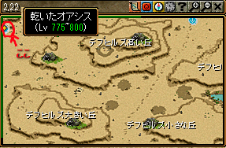
オアシスの全体マップは以下の通り。
左上の赤で囲ったエリアが「日本地図」と呼ばれるPT狩りのエリアである。
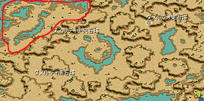
狩り方
狩りは
６箇所をグルグル回る移動狩り。
昔の
レイスや呪い、近道の移動狩りを彷彿とさせる。
私が通っていた時は↓のような感じで回っていた。
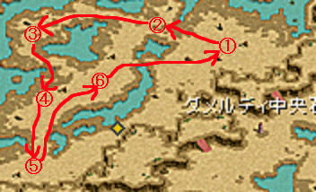
MOBは
非常に固い、痛い。一番固い古代エルフは
HP1000万近くあると思われる。
しかも、主に狩る
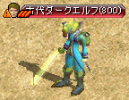、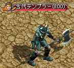、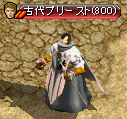
の3種類は致命打抵抗が高く、
普通の状態だとクリティカルが全く出ない。
このため、
物理職は基本サバ狩りで行っている。
サバ狩りを実現するため、
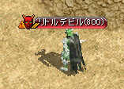、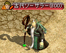、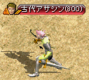、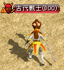
の4種類は
基本的には隔離する。
シフでソロをする場合、
チビデーモンと爺のみ隔離するケースもある模様。
闘士は
強打による３倍ダメが存在し、覚醒スキルの実装により双連破が連発出来るようになった。
このため、装備ステが十分であれば
サバにならなくても狩りきるのに十分な火力が出せるようになった。
これに伴い、
闘士がいる場合は隔離せずに狩る場合もあるようだ。
◆
15/03/01追記
闘士は隔離なしで狩れるが、他の火力は隔離してサバでないと狩れない、という状態でトラブルが時々ある模様。
壷でレベ上げする選択肢もあってオアシスで狩る人自体が減り、難しい狩場になってしまっているようだ。
出来た頃の最上位狩場としての位置づけとは異なり、現在はレベ上げの途中の１狩場という位置づけになっている。
こうした状況を踏まえると、
ＭＯＢに致命打が通るように変更し、サバなし隔離なしで気軽に狩れるような狩場にするべきだと考える。
また、日本地図以外の場所も見直し、
深淵の地底湖のデカダンスのような感じで
知識職がある程度狩れるような場所を作ってほしい。
オアシス狩りのLv帯
オアシスに通うLv帯の目安は
750～850。
通い始めはあまりうまくないが、
775あたりからうまく感じるようになり、800付近ではとてもうまくなる。
750未満や851以上でも火力のあるPTならばそこそこEXPが入るが、
転生者の場合、100以上Lvの高いメンバーがいるとEXPが入らなくなるので、PTメンバーのLvによっては注意が必要である。
760ぐらいまでは
時森ボスPTに通う選択肢がある。
また
835付近からは
深淵の地底湖に移る選択肢がある。
サバ狩りをするために
①必要なステ
サバで狩るために必要なステは
敏捷1300、運3277、回避50％
と言われているが、これより低くても大丈夫かもしれない。
正確には不明。
命中補正無視は必須。
MOBとのLv差による補正が考えられるため、
特に本体が800↓の場合はこれより多くのステが必要になるかもしれない。
MOBの中で一番運が高いテンプラが運2277のため、
その攻撃を全回避するために運3277が必要と言われている。
敏捷はやはり一番高いテンプラが1081であり、
これより上であればよいという意見もある。
回避に関して、WIZの
霧による回避率上昇値を一覧表の形で紹介する。
回避率計算の参考にされたし。
| スキル |
回避率上昇値 |
スキル |
回避率上昇値 |
スキル |
回避率上昇値 |
スキル |
回避率上昇値 |
| 55 |
14％ |
105 |
24％ |
155 |
34％ |
205 |
44％ |
| 60 |
15％ |
110 |
25％ |
160 |
35％ |
210 |
45％ |
| 65 |
16％ |
115 |
26％ |
165 |
36％ |
215 |
46％ |
| 70 |
17％ |
120 |
27％ |
170 |
37％ |
220 |
47％ |
| 75 |
18％ |
125 |
28％ |
175 |
38％ |
225 |
48％ |
| 80 |
19％ |
130 |
29％ |
180 |
39％ |
230 |
49％ |
| 85 |
20％ |
135 |
30％ |
185 |
40％ |
235 |
50％ |
| 90 |
21％ |
140 |
31％ |
190 |
41％ |
240 |
51％ |
| 95 |
22％ |
145 |
32％ |
195 |
42％ |
245 |
52％ |
| 100 |
23％ |
150 |
33％ |
200 |
43％ |
250 |
53％ |
②火ペットのファーストエイドと風抵抗が必要
テンプラの範囲攻撃（風属性）に対応するため。
この範囲攻撃は、
タゲをとっている人は食らわず、周りが食らう。
風抵抗は
表示で９０％確保を目安に、装備やミニペットを調整しよう。
シフは自分のスキルでエイドが出来るが、
火ペットでした方が楽かもしれない。
※
分身を切らさなければエイドに関わらず大丈夫のようだ。
2匹ミニペットを出している人は1匹を火にして、残りの1匹は
・闇（最終ダメ追加）
・風（風抵抗をかせぐ）
・光（スキル上昇効果）
などを選んでいる人が多かった。
③状態異常抵抗を完備しよう
古代エルフが
石化攻撃をしてくるため。
抵抗が足りないとステや回避が足りていても
石化→Ω＼ζ°)ﾁｰﾝ となるので注意。
④エイドの発動を忘れないようにしよう
サバになりたてで
エイドが発動していない状態で不用意にPTに近づき、
テンプラの範囲風攻撃に巻き込まれてΩ＼ζ°)ﾁｰﾝ →もう1回サバになりに
という残念なケースをしばしば見かけた。
エイドの発動を忘れないようにしよう。
エイドの発動は、
マップ中央や下の方にいるクモでやっている人が多かった。
⑤その他
1時間沸きの
サキュ以外は全部人間系MOBなので、
シフはブレイブやリベンジ、アチャランはFAで狩っている人がほとんど。
カンニをつけている人も多いようだ。
MOB紹介
狩るMOB
※HP、攻撃力、防御力については補正がかかっているようで、モンスターデータの基本数値と全く違う模様。
◆古代エルフ
エルフガーディア4Zin
| HP |
攻撃力 |
防御力 |
力 |
敏捷 |
運 |
火抵抗 |
水抵抗 |
致命打抵抗 |
| 約1000万？ |
？～？ |
約60000？ |
80 |
647 |
1213 |
113％ |
123％ |
302％ |
主に狩るMOBその①。
とても固い。
石化攻撃（ストンゲイズ）をしてくる。
データ上はHP346万となっているが、体感的に
1000万近くはあると思われる。
◆テンプラ
テンプラーZin
| HP |
攻撃力 |
防御力 |
力 |
敏捷 |
運 |
火抵抗 |
水抵抗 |
致命打抵抗 |
| 約200万？ |
？～？ |
約130000？ |
1707 |
1081 |
2277 |
72％ |
70％ |
81％ |
主に狩るMOBその②。
MOB周辺に２人以上いると、
風属性の範囲攻撃をしてくる。抵抗が低いとこれがかなり痛い。
もう１つ、サバ狩りの人以外が対象だが、
物理攻撃が非常に痛い。
これもデータ上はHP42万となっているが、実際は
200万近くありそう。
◆おいちゃん
ダークビショップEx
| HP |
攻撃力 |
防御力 |
力 |
敏捷 |
運 |
火抵抗 |
水抵抗 |
致命打抵抗 |
| 約100万？ |
？～？ |
約130000？ |
451 |
541 |
677 |
167％ |
167％ |
276％ |
主に狩るMOBその③。
上記２つに比べると倒しやすい。
とはいえ、やわいわけでは全くない。
データ上はHP217万となっているが、体感的には
100万程度か。
◆サキュ
パンタズドリーム3Zin
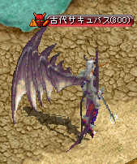
| HP |
攻撃力 |
防御力 |
力 |
敏捷 |
運 |
火抵抗 |
水抵抗 |
致命打抵抗 |
| 約2500万？ |
？～？ |
約60000？ |
728 |
1051 |
728 |
152％ |
97％ |
15％ |
一番左上のシマに
１時間沸きで出現する。
デビルスピードあり＆お金を盗む。
コンボで来ると
３フレでお金を盗まれる。
実害はほとんどないが、人によっては
軽い精神ダメージを受けるかもしれない。
データ上はHP130万となっているが
ウソ八百億。
体感的には
古代エルフの２～３倍（2000～3000万ぐらい？）あるように思われる。
隔離するMOB
◆チビデーモン
デーモンZin
デビルスピードが凶悪なため。
EXPが１しか入らないため。
◆
爺
ドゥームキャスターZin
魔法攻撃が回避できないため。
◆エルフ
エルフ騎士Zin
必中攻撃（スナイプ）があるため。
◆
リザキリ
ナーガファイターZin
EXPがまずいため。
増幅器について
オアシス入り口のところにいるNPC（ハメーヌ・フロル）より購入可。
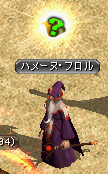 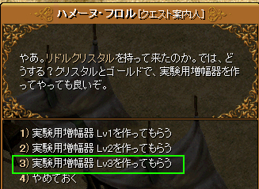
増幅器は3種類あるが、基本的にはLv３を使うとよいだろう。
最終ダメージ＋30％の効果がある。
入手には
リドルクリスタル200個と80万Gが必要。
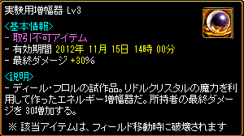
マップ移動すると増幅器はなくなってしまい、購入しなおす必要がある。
つまり、
増幅器はオアシスマップ限定で使用可能である。
リドルクリスタルは、オアシス内のMOBを倒すとドロップする。
PTの人数が多いほどたくさんドロップする。
日本地図では3人以上のPTでないと出ない。
他の場所ではソロでも出る所があるようだ。
隔離の仕方
鯖や人によって隔離をする場所が違うかもしれない。
おおむね右端か、四国の位置に隔離しているようだ。
青鯖では全部右端に隔離する事が多いため、
ここでは右端へ隔離する際のコツを紹介する。
参考までに、
チビデーモンは隔離用キャラを置いておかなくても沸きなおしが起こらないため、
これのみ四国に隔離するという方法もあるようだ。
隔離がほどけた際に、周りのＭＯＢにデビルスピードがかかるのとかからないのとでは
再隔離の難易度がだいぶ変わるので、
チビデーモンのみ別の場所に隔離するというのも有力な方法であろう。
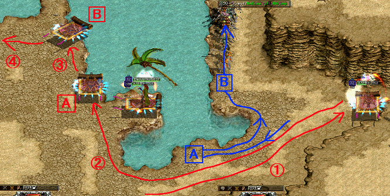
①まず右端まで行き、MOBを出来るだけ引きつける。
②次にＡの位置まですばやく移動し、そこで待機する。
するとMOBはＡの位置まで移動した後、Ｂへと入っていく。
タイミングが悪いとたまに左側に出てきてしまう時があるので、その際は①からもう一度行う。
③MOBが全て
Ｂ付近に入ったら、
Ｂに移動。MOBも釣られて上に移動する。
④左に移動し、MOBのタゲをはずして完了。
なお、隔離状態を維持するためには
Ａ地点のすぐ右にあるちょっと突き出た所にキャラを置いておく必要がある。
隔離キャラが死んだ状態では隔離の役目を果たさないようなので、注意しよう。
テンプラのタゲを取ると同時に隔離ＭＯＢが反応する模様。
特に右上のシマを狩る場合、下の方でテンプラを倒すと隔離ＭＯＢが釣られて出てきてしまう事がある。
なるべく上の方で倒すよう心がけるとよいだろう。
簡単にサバイバルになる方法
簡単にサバイバルになれる方法を紹介する。
※
この方法ではマップ移動を行うため、リドルクリスタルによる増幅器の効果が切れる。
これが嫌な場合、オアシスマップ内でクラゲを使うなどしてサバになる方法を選択するとよい。
場所は
ビガ↑↑のマップ。
デフヒルズ／小さな洞窟があるマップである。
マップに入って左方面、「燃える熱気」を通過して少し行くと草が生えている所がある。
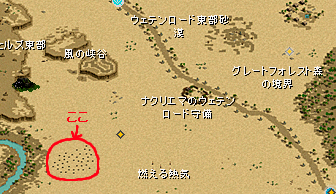
この草に触ると↓のようなメッセージが出て、
最大HPの10％のダメージを受ける。
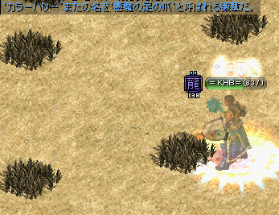
これを利用して、
ギルホであらかじめキャンディー（HP10回復）を買っておき
①草を９回触る→
②キャンディーを１つ使って10回復→
③草を１回触る
で簡単にサバイバルになれる。
手順①で
勢い余って10回目を触るとΩ＼ζ°)ﾁｰﾝ とか、
キャンディーを使ったつもりが使えてなくてΩ＼ζ°)ﾁｰﾝ というような事がよくあるので、
ステータス画面などを開いてHPの数値を見ながらやるのがよいだろう。
なお、
10回目を触った後すぐに火ペットを活性化させると高確率でエイドが発動するようだ。